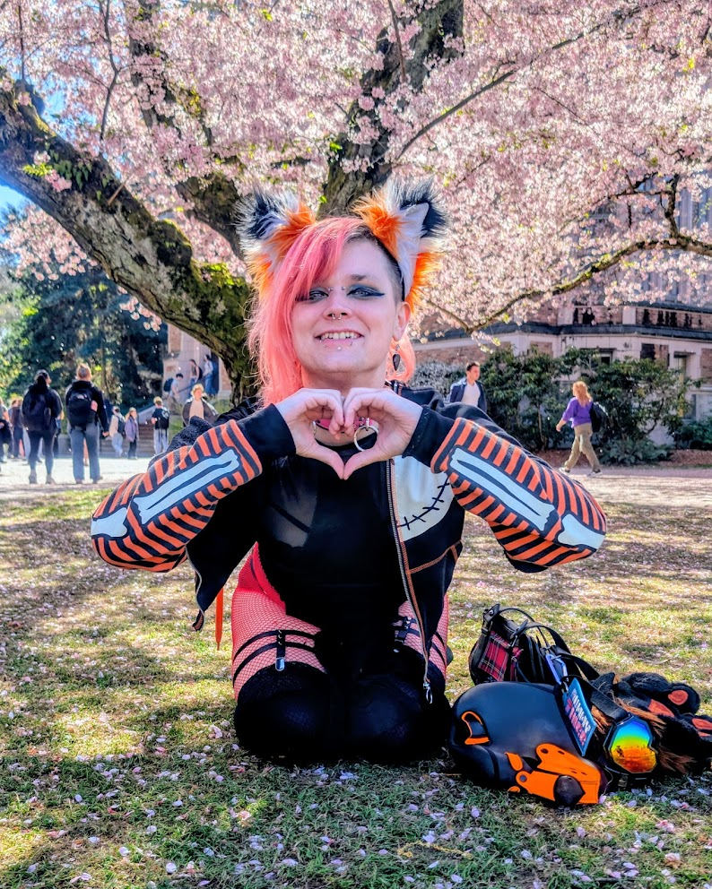

I am an extremely knowledgable, cross-domain professional with over 12 years of
experience in technical support in helpdesk roles, 12 years of experience with digital media
(everything from video editing, photography, web design, etc.), 2 years of systems administration,
and 2 years of QA testing. I specialize in automating software deployments using BASH and
PowerShell, managing enterprise systems, and streamlining device imaging processes.
My journey has taken me from supporting classrooms and faculty at both the University of Washington
and South Puget Sound Community College to closing over 1,200 bugs while doing
QA testing at Bungie on the live-service AAA shooter Destiny 2. I've also worked in data annotation,
IT systems administration, and now continue to pursue my passion for automation and creative
projects.
Beyond the terminal, I have a passion for storytelling and aesthetics, creating engaging multimedia
content that resonates across platforms. Whether I'm scripting deployments, testing games, or
editing videos, I bring the same dedication to detail and love for technology to every project.
Email: moxximewws@gmail.com
Location: Seattle, WA, USA
BlueSky: bsky.app/profile/moxximewws.com
GitHub: github.com/foxxymoxxi